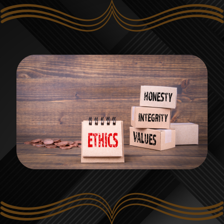

CAPÍTULO 10
ÉTICA E RESPONSABILIDADE SOCIAL NO TRABALHO
Por Victor Palmieri
Ouvir o conteúdo da página.
Nesse capítulo será abordado sobre conduta e a maneira como na nossa sociedade existem formas utilizadas para lidar com as questões coorporativas. Filósofos e sociólogos estudam esse tema para entender o comportamento humano diante dos problemas em um trabalho; a ética em si é utilizada como parâmetro de comportamento, mas ao imaginarmos a forma como isso se manifesta em um local de trabalho, é possível chegar a novas conclusões.
A realidade de um trabalho é muitas vezes desafiadora, lidar com pressões e responsabilidades não é uma tarefa fácil para nenhum ser humano, os desfechos as vezes são catastróficos. O importante é entendermos que o trabalho exige de quem o exerce a maturidade, tolerância e paciência, mas principalmente a entrega. No momento em que você está ocupando um posto no local onde trabalho você se torna uma despesa, uma dívida que a empresa tem em troca da sua mão de obra, isso te faz muitas vezes substituível, não seria um gasto te demitir, se torna uma necessidade da empresa de contratar alguém que faça o seu trabalho e tenha entrega.
Na sociedade em que vivemos existe um tópico conhecido ao falarmos de Ética no Trabalho, denominado Código de Ética profissional, seria um documento que dita todas as diretrizes para saber agir e ter uma boa postura diante da sociedade e do trabalho. Essas diretrizes seriam códigos de conduta que uma pessoa deveria seguir para ter um comportamento aceitável socialmente.
É importante para o desenvolvimento de uma empresa, que seus funcionários sejam confiáveis, tanto para questões técnicas quanto sociais. Um ambiente de trabalho produtivo, tem como característica o engajamento de seus funcionários. Esse engajamento é a soma da boa vontade coletiva, portanto é importante que as pessoas tenham a vontade de exercer o trabalho com qualidade, caso contrário a produção pode diminuir, ou piorar. Seja qual trabalho for, lógico que se for um trabalho estritamente individual pode-se considerar algumas diferenças, mas em geral, observamos que o trabalho é uma atividade coletiva, na maioria das vezes. Um membro precisa do outro, se um membro diminui a qualidade, o grupo perde; tem de se considerar que o principal do grupo é a estabilidade e frequência de sua entrega, ou seja, individualmente cada membro ajuda um ao outro ao se ajudar. Para ter essa consistência, é necessário um certo comprometimento, que vai trazer um sentimento de qualidade em cada um dos que compõe o grupo do trabalho.
Tendo um ambiente de trabalho comprometido e produtivo, agora temos uma harmonia entre todos, trabalhar agora é algo que se faz de boa vontade, torna-se confortável, já que todos o fazem direito. Porém, o que costumamos ver, é uma recaída de qualidade, muito por conta de membros que perdem essa característica produtiva, seja por qual motivo for. Quando isso acontece, vemos que afeta outros membros, desmotiva o grupo, e por conta disso vemos que outros membros têm a mesma ou parecida recaída. Os melhores trabalhos do mundo são harmônicos, mas é muito difícil contar com a boa vontade de todos, é verdade, quanto a isso não há uma solução simples, recaídas vão acontecer, momento ruins são inevitáveis. Porém, é necessário aproveitar o momento de alta coletiva, por mais tempo ela dure, para que sua qualidade seja forte no bom momento, seja 5 meses, 7 meses, 1 ano, certamente trará alegria e orgulho as conquistas.
Os trabalhos mais individuais, como por exemplo escritor, físico, microempreendedor/empreendedor, esses deve-se considerar que, por serem trabalhos muitas vezes independentes, a necessidade de uma harmonia não é coletiva, mas individual. O consciente da pessoa deve estar de bem consigo mesmo. A semelhança com trabalhos coletivos, é que ambos precisam de qualidade em suas produções, e para isso ambos precisam ter harmonia em seus bons momentos. Claro que dependendo do trabalho as habilidades utilizadas são diferentes, como por exemplo escritores precisam de criatividade, engenheiros precisam de conhecimentos de sua área, membros do tribunal de justiça precisam de conhecimentos de Direito. Então para se obter a qualidade no trabalho, deve-se considerar que os membros também precisam ter conhecimentos equivalentes entre si, ou seja, precisam estar no mesmo patamar para exercer o trabalho, saber mais ou menos parecido o que fazem.
O trabalhador em si tem que estar comprometido com essas necessidades e a sua própria responsabilidade, e fazer o melhor que puder para seguir o caminho do progresso profissional, exige paciência. A força de vontade e a motivação parecem nunca vir, mas lhe digo, a motivação vem quando você vencer, apenas quando o primeiro passo der frutos.
Lógico que nem todos levam isso a sério, e entendem o trabalho como algo ruim e inevitável, um local que você não gosta, muitas vezes com pessoas que você não gosta, tendo que ficar horas lá se estressando. Eu sinceramente encaro isso como algo muito honroso e dedicado, mesmo que não saudável e necessário. A maneiras melhores de viver a vida e se dedicar a estar orgulhoso de si mesmo, do local do seu trabalho e das pessoas deste local.